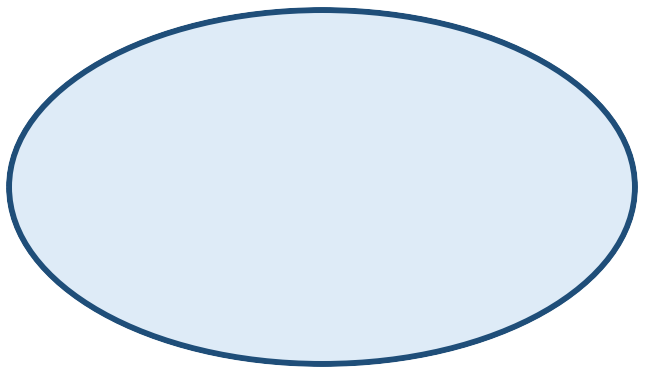
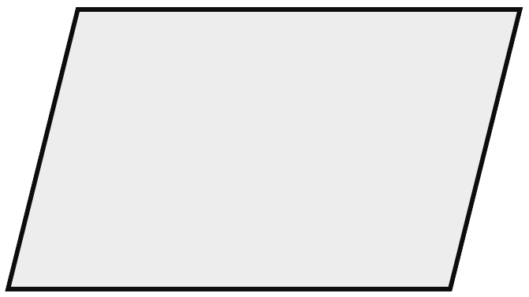

7. SINIF MATEMATİK · 2. TEMA · MAT.7.2.4
Cebirsel İşlemler ve Algoritma
Temel aritmetik ve cebirsel ifadelerle işlem içeren durumlardaki süreci algoritma ifade yöntemlerini kullanarak yapılandırabilme
Temel aritmetik ve cebirsel ifadelerle işlem içeren durumlardaki süreci algoritma ifade yöntemlerini kullanarak yapılandırabilme
Algoritma, belirli bir sonuca ulaşmak için izlenen düzenli adımlar bütünüdür. Bu temada algoritmalar; tam sayılarla dört işlem, işlem önceliği, kesirlerle bölme ve cebirsel ifadeler gibi matematiksel durumlar üzerinden yapılandırılır.
Adımları günlük ve anlaşılır cümlelerle açıklar.
Algoritmayı kısa ve düzenli komutlarla ifade eder.
Adımları semboller ve oklarla görselleştirir.
2x+5 ifadesinin değerini bulmak için önce x değerini al, 2 ile çarp, 5 ekle ve sonucu göster.
| Sıra | Adım | İlişki |
|---|---|---|
| 1 | x değerini al | Girdi |
| 2 | x'i 2 ile çarp | İşlem |
| 3 | 5 ekle | İşlem |
| 4 | Sonucu göster | Çıktı |
Bir sayının 3 katının 4 fazlasını bulmak için:
Aynı algoritmayı bu kez akış şeması sembollerini kullanarak gösterelim. Girdi için paralelkenar, işlem için dikdörtgen, çıktı için dalgalı dörtgen, başlangıç ve bitiş için elips kullanılmıştır.

BAŞLA
x değerini al x'i 3 ile çarp4 ekle
x'i 3 ile çarp4 ekle Sonucu göster
Sonucu gösterAmaç 2x+5 değerini bulmak olsun. Aşağıdaki algoritmada işlem sırası yanlıştır:
Aynı sonucu veren bir algoritmanın gereksiz adımlarını kaldırabiliriz. Ancak kısaltma, işlemin matematiksel anlamını değiştirmemelidir.
x'i 2 ile çarp → sonucu sakla → sonuca 5 ekle → sonucu göster.
x'i 2 ile çarp → 5 ekle → sonucu göster.
İşlemin hangi sırayla yapıldığını belirle.
Algoritmayı açık cümlelerle anlat.
Adımları görsel sembollerle göster.